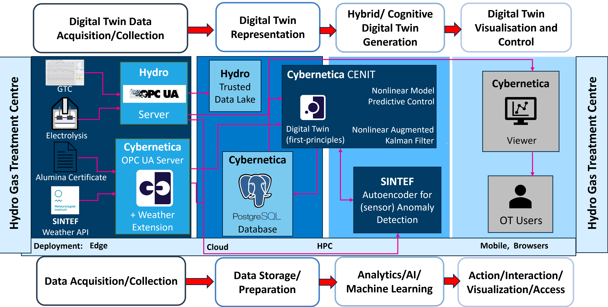

Pipeline name
Emission (Gas Treatment Center) temperature and fan control
Pipeline overview

Pipeline components
The following components are used in the pipeline:
Pipeline example description
Data Sources:
- Weather data is collected from Norwegian Meteorological Institute
- Process data from cells and GTC
Data Processors:
- MAI queries and collects weather data through MET API, prepares data for OPC UA
- Hydro OPC UA and GTC OPC UA expose process data to data processors
- OPC UA collects data from various sources and makes it available to Cybernetica CENIT, Cybernetica ModelFit & Cybernetica Viewer
- Cybernetica CENIT and Cybernetica ModelFit perform online/offline optimization, respectively
Data Sinks:
- Optimal control sequence as calculated by Cybernetica CENIT is implemented in control system
- Data is visualized graphically to the user using Cybernetica Viewer
Temperature in tapping stream and Slag in refining ladle
Predictive Maintenance of Machinery
Rolling Mill Tracking System
Hybrid model for ladle refractory wear
Boiler fouling management
Defined in COGNITWIN WPs
WP1 Hydro pilot + WP5 + WP4